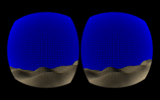
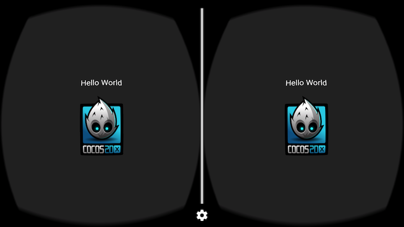
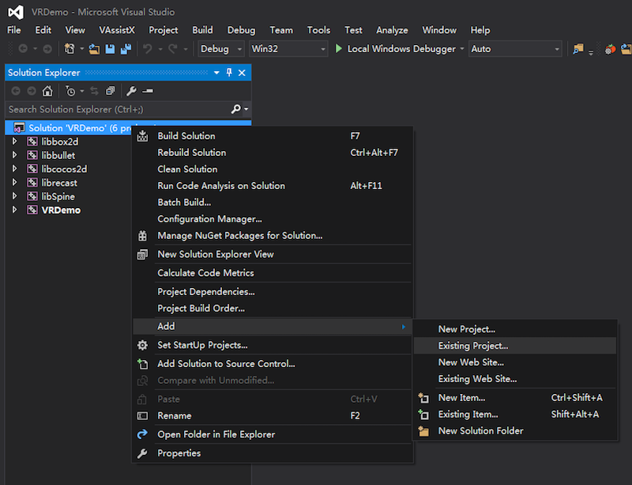
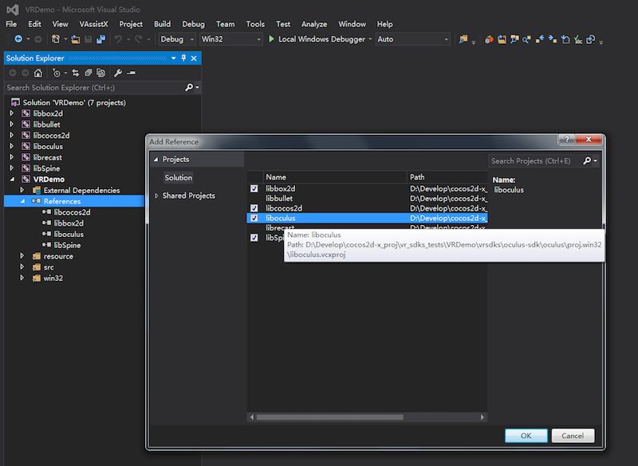
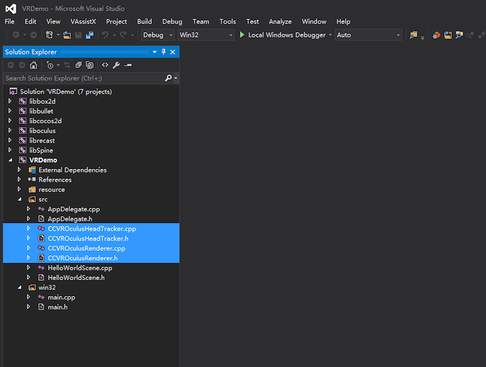
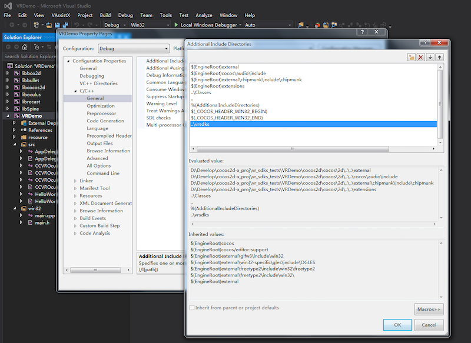

Virtual Reality (VR)
You have probably heard the term Virtual Reality or VR used before. VR isn't new. Its roots can be traced back to earlier than the 1970's. The original goal of VR was to take an environment or situation, both realistic and unrealistic and let the user feel what it is like to experience it by simulating their physical presence in the environment. You can think of it as transporting the user to another experience, all the while never leaving their physical surroundings. You might even associate VR with wearing a head-mounted display or special gloves or even taking place on a special platform.
Modern VR is focused around games and immersive video.
Is VR production ready?
No, VR is still in the early phases of development. Please consider it experimental! In fact, we are providing a generic renderer implementation to use as a proof-of-concept. You can use this in a simulator or with a Google Cardboard head-mounted display. You cannot trust the generic renderer to produce 100% correct results. It is always necessary to test with a supported SDK and supported hardware.
We support the popular VR SDKs:
| SDK | Company | Runtime Platform |
|---|---|---|
| GearVR | Samsung | Galaxy Note 5/S6/S6 Edge/S6 Edge+ |
| GVR(Cardboard And Daydream) | Android 4.4 (KitKat) or higher | |
| DeepoonVR | Deepoon | Galaxy Note 5/S6/S6 Edge/S6 Edge+ |
| OculusVR | Oculus | Oculus Rift(Windows 7+) |
Is your game a good VR candidate?
If, late on a Friday evening, after a night of dinner, dance and drink, you find yourself thinking let me take my current game and turn it into a VR game. Pause... longer... and make sure you are not dreaming! Seriously, you need to stop and ask yourself a few questions:
- How do I interact with the game currently? Touch? Gamepad? Keyboard?
- In 2d games: what does moving the camera mean? 2d games are not usually made in the first person.
- Is your game done in a first person scenario? First person games can be made into VR games easier than others types of games.
- Is my 2D or 3D game a good candidate for a VR game after answering the above questions?
When using VR it is important to note the following items:
- Touch events don't work as expected when developing for VR. In fact, touch events should be disabled in VR games.
- VR games should be configured to use a gamepad and/or another external input device, such as a head-mounted display.
With this knowledge and a can do attitude, get started...
How to get started
First, it is important to double check your hardware to make sure your device supports VR. VR needs two things:
-
Stereo rendering (distortion mesh): available on every platform

-
headset input: available only on iOS and Android
Importing VR
Second, use the Cocos Package Manager, which is part of the Cocos Command-Line Tool to add VR to your project:
You always need to import the vrsdkbase. This step takes care of modifying your projects
to support VR.
$ cocos package import -v -b vrsdkbase --anysdk
Notice in AppDelegate.cpp code has been added to enable VR:
// VR_PLATFORM_SOURCES_BEGIN
auto vrImpl = new VRGenericRenderer;
glview->setVR(vrImpl);
// VR_PLATFORM_SOURCES_END
Import the VR SDK that you need. Currently, Gear, Deepoon, GVR and Oculus are supported.
$ cocos package import -v -b SDK_NAME --anysdk
Examples:
# add the GearVR package
$ cocos package import -v -b gearvr --anysdk
# add the Deepoon VR package
$ cocos package import -v -b deepoon --anysdk
# add the Google VR package
$ cocos package import -v -b gvr --anysdk
# add the Oculus VR package
$ cocos package import -v -b oculus --anysdk
Compiling and Running with VR
IOS
If you are running iOS, you are limited to running the generic renderer on hardware only, you can use cocos compile cocos run as you typically would.
Android
If you are running on Android and planning on targeting a specific VR SDK you need to perform a few additional steps. Running switchVRPlatform.py from your projects root directory will take care of everything. Here is an example for installing GearVR in C++, JavaScript and Lua:
## in C++
# first, install vrsdkbase
$ cocos package import -v -b vrsdkbase --anysdk
# second, install GearVR
$ cocos package import -v -b gearvr --anysdk
# third, switch to using GearVR
$ python vrsdks/switchVRPlatform.py -p gearvr-sdk
## in JavaScript and Lua
# first, install vrsdkbase
$ cocos package import -v -b vrsdkbase --anysdk
# second, install GearVR
$ cocos package import -v -b gearvr --anysdk
# third, switch to using GearVR
$ python frameworks/runtime-src/vrsdks/switchVRPlatform.py -p gearvr-sdk
Attention: you should using $ python vrsdks/switchVRPlatform.py -h to check the name of SDK, here is gearvr-sdk.

For Android there is also a few special steps that must happen. These are dependent upon your Runtime Platform. Please refer to the table at the start of this document.
GearVR/Deepoon VR/GVR Compilation and Running.
Running GearVR, Deepoon VR or Google VR on Android requires a change in compile flags. Example:
# from a command-line
$ cocos run -p android --app-abi armeabi-v7a
# using Android Studio
$ cocos run -p android --android-studio --app-abi armeabi-v7a
Attention: All mobile VRSDK(GearVR/Deepoon VR/GVR) only support armeabi-v7a architecture. GVR only support Android Studio. So it can only use the second command to compilation.
If GearVR or Deepoon VR crashes at runtime, please check to ensure you have an Oculus signature file in assets folder.
Oculus Compilation
OculusVR is for the desktop PC platform. This requires Visual Studio 2015.
First, import liboculus.vcxproj into your project(in oculus-sdk/oculus/proj.win32/ folder)
and add a reference to it:


Second, import the CCVROculusRenderer and CCVROculusHeadTracker classes(in oculus-sdk/ folder):

Finally, add the search path of VR-SDK (..\vrsdks) to your project:

If Oculus crashes at runtime, please check your installation of the Oculus Rift Runtime.